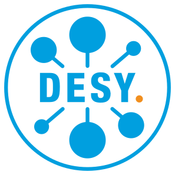

Shah Nawaz
Assistant Professor · Multimodal Representation Learning & Robustness
Institute of Computational Perception, Multimedia Mining and Search group
Johannes Kepler University Linz, Austria
I work on representation learning for multimodal and language-grounded AI — how systems built from faces, voices, images and text should behave when the real world hands them incomplete, noisy or culturally unfamiliar inputs. My group publishes at ICML, CVPR, ACM MM, the ACM Web Conference, ICASSP, Interspeech, ACM RecSys and IEEE TIP.
Research themes
Representation
Multimodal & cross-modal learning
Shared and single-branch embedding spaces that connect faces, voices, images and text without a separate network per modality.
Geometry of joint spaces
Inductive biases — fixed simplices, orthogonal projection, prototype-free objectives — that impose class separation instead of learning it.
Reliability
Robustness under imperfect input
Models that degrade gracefully when a modality is missing, corrupted or sensor-malfunctioning at inference — not only at training time.
Responsible & trustworthy AI
Bias, fairness and explainability, including gender-controlled evaluation that separates identity structure from demographic shortcuts.
Evaluation & efficiency
Vision–language model evaluation
Benchmarks that test whether large models generalise across languages and cultures, or merely exploit dataset shortcuts.
Efficient learning
Distillation, layer dropping and dynamic networks for speech and vision models that must run under a compute budget.
Applications
Machine learning for science
Explainable ML and data reduction for large-scale X-ray detector and serial-crystallography data.
Multimodal recommendation
Single-branch recommenders that stay accurate in cold-start and missing-modality conditions.
Selected publications
Experience
-
Nov 2023 – present
Assistant Professor
Johannes Kepler University Linz · AustriaInstitute of Computational Perception · Multimedia Mining and Search groupIndependent research on multimodal and language-grounded learning, retrieval and robust representation learning; supervision of master's and doctoral students; leadership of international benchmarks.
-
May – Oct 2023
Researcher
IMEC · Leuven, BelgiumSENSAI teamSensor-fusion methods across visual, LiDAR, radar and related modalities.
-

May 2021 – Apr 2023Postdoctoral Researcher
German Electron Synchrotron (DESY) · Hamburg, GermanyDetector group · machine-learning subgroupLarge-scale scientific-data classification, data reduction, compression and explainable machine learning for X-ray detectors.
-
Nov 2019 – May 2021
Postdoctoral Researcher
Italian Institute of Technology · Genova, ItalyPattern Analysis and Computer Vision research lineMultimodal representation learning and cross-modal recognition.
-
Jan – Dec 2016
Lecturer
National University of Computer and Emerging Sciences · Faisalabad, PakistanSole lecturer for three undergraduate courses — Operating Systems, Web Programming and Advanced Computer Architecture.
Education
-
2016 – 2019
Ph.D. in Computer Science
University of Insubria · ItalyThesis: Multimodal Representation and Learning. Supervisor: Prof. Ignazio Gallo.
-
2013 – 2015
M.Sc. in Embedded Systems
Technical University of Eindhoven · NetherlandsThesis: HOG-SVM Car Detection Pipeline on an Embedded GPU. Supervisor: Prof. Dr. Peter de With.
Funding
IEEE Signal Processing Society Challenge Program — FLAG 2027
Competitively selected for support under the IEEE SPS Challenge Program to run the Face-voice Association across Languages and Gender challenge at ICASSP 2027, including dataset curation, evaluation protocol and baseline release.
Institutional research funding
Internal competitive funding supporting multimodal representation learning under missing and multilingual data conditions.